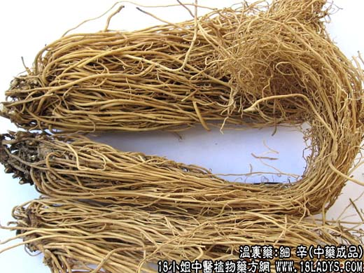

原文连接:https://www.daquan.com/post/2019.html



本品为常用中药，《神农本草经》列为上品。根细味辛故名。
别名：辽细辛。
来源：为马兜铃科多年生草本植物辽细辛Asarum beterotropoides Fr.Schmidt varmandshurcum(Maxim,)Kitag.和华细辛Asarum sieeboldii Miq.带根的干燥全草。以辽细辛为主。野生栽培。
植物形态：辽细辛为多年生草本，地下有多数细根呈丛状，具有特异的辛香气味。基生叶2～3枚，叶柄长，通常无毛或稀有短毛，叶片心脏形，全缘，表面深绿色。花单一、紫红色，筒壶状，花被裂片三枚花开时向外反折。果实为假浆果。
华细辛：华细辛与前种极相似，但根茎较长，节间密，叶背秘生或散生较长的毛。
产地：辽细辛产吉林抚松、临江、辽宁、盖平、海城、丹东、黑龙江等地。华细辛产湖北、陕西、四川、量较小。
性状鉴别：辽细辛：根茎长约1～4厘米，节间长2～3毫米。花叶抽皱，叶灰绿色。根细长约10～15厘米，直径约1毫米，灰棕色，密生根茎上、稍拘挛，卷缩成团。气芳香味辛辣而麻舌。以根色灰黄，叶色绿，味辛辣麻舌者为佳。
华细辛：似辽细辛，但根茎较辽细辛长，约3～8厘米，节间仅1毫米，气味均较辽细辛弱，而麻木的烧灼感较强。
主要成分：含挥发油，其中主要为甲基顶香酚、左旋细辛素（C20H18O6）等。此外又含一种酚（C10H10O4）、优香芹酮（C10H14O）、中性结晶物（C10H9O3）。（注：化学数字在右下角）
功效与作用：散寒、祛痰、止痛，其原理为：
1、解热。动物实验证实有一定的解热作用。
2、抗菌。其乙醇浸液在体外对革兰氏阳性菌和伤寒杆菌等有显著的抗菌作用。
3、镇痛。具有局部麻醉作用。
炮制：切咀生用。
性味：辛温。
归经：入肺、肾经。
功能：散风祛寒，通窍止痛，下气祛痰。
主治：风寒感冒、鼻塞头痛、风寒湿痹、气逆痰多喘咳，牙痛。
临床应用：1、用于治疗痰饮咳嗽（如慢性支气管炎、支气管扩张等有大量清晰痰液的咳嗽）。有镇咳作用，常与干姜、五味子同用，前人的经验说：“干姜细辛五味子为治疗痰饮咳嗽之良药”。但肺结核之咳嗽和其他干咳症，则不宜用。
2、用于治疗外感风寒，尤其鼻塞多涕，咽部有涎（分泌物多）者用之更为合适。或防风、荆芥，或配桂枝、生姜等药，都可以强发汗解表效果。方如细辛汤。
3、用于治疗由风湿或流感引起的头痛、关节痛。
此外，传统经验常以作为热药的细辛，与寒药配伍治疗某些热症，这样一凉一热，互相配合，效果颇佳。例如配石膏治疗胃热引起的牙痛（牙周炎），配黄连治疗口舌生疮（口腔炎）。
在外用方面，据报道，用细辛敷脐部可治阿弗他性口炎，其法为以细辛9～15g，研细末，和水成糊剂，加少量甘油或蜂蜜调匀置纱布脐部，至少贴三天，疼痛将会迅速减轻，溃疡面结疤愈合。
使用注意：本品忌藜芦同服。
用量：1～3g细辛的性味辛烈，一般多用1.5~3g；平日气血两虚的人，有时只用1g即能收效，多则1.5g便可，不宜多用。
处方举例：细辛汤（《本事方）：细辛1.5g，桂枝4.5g，制半夏6g，涪陵9g，桔梗3g，生姜6g，甘草3g，水煎服。
注：1、现辽宁凤城等地辽细辛栽培成功，根叶均较野生者粗大，但香味稍差。2、各地尚有多种土细辛，如江湖的杜衡（马辛），陕西、湖北、四川等地的单叶细辛、双叶细辛等。